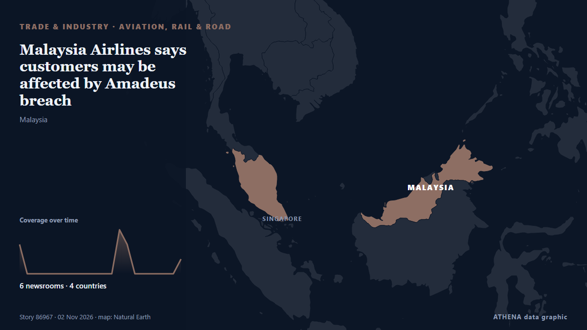

Trade, Industry & Infrastructure

Aviation, rail & roadMalaysia Airlines says customers may be affected by Amadeus breach
The incident may have affected information processed between August 2023 and September 2026, the airline said on Sunday (Nov 1). from CNA (Channel NewsAsia)
| 20 Oct | 28 |
|---|---|
| 21 Oct | 40 |
| 22 Oct | 96 |
| 23 Oct | 73 |
| 24 Oct | 41 |
| 25 Oct | 57 |
| 26 Oct | 116 |
| 27 Oct | 103 |
| 28 Oct | 90 |
| 29 Oct | 90 |
| 30 Oct | 94 |
| 31 Oct | 28 |
| 1 Nov | 36 |
| 2 Nov | 8 |
Two oil tankers explode after hitting mine in Hormuz Strait, IRGC spokesperson says
"One of the vessels is a supertanker; it is currently engulfed in flames following a powerful explosion," the Iranian Revolutionary Guard Corps (IRGC) Navy spokesperson said. from The Jerusalem Post
Kazakhstan and Kuwait Agree to Expand Trade, Investment and Food Security Cooperation
Kuwait City, Oct 30: Kazakhstan and Kuwait held the second round of political consultations between their Ministries of Foreign Affairs, reaffirming their commitment to further str... from Arab Times
Vessel Struck in Strait of Hormuz
The tanker was approached by a small boat that attached two explosive devices to its hull, causing blasts that sparked an engine-room fire, which has since been extinguished, UKMTO says. from TRT World
UN demands investigation into death of staff member in Houthi custody
A Yemeni staff member of the UN Human Rights Office has died in Houthi custody after being arbitrarily held for more than two years, the UN human rights chief has said. from Sky News (World)
Tanger Med 3 terminal due to start operations in mid-2031
Tanger Med, Morocco (Ports Europe) November 2, 2026 – The Tanger Med 3 container terminal is due to start operations in mid-2031, Tanger Med chief executive Mehdi Tazi-Riffi said. from Ports Europe
Iran's IRGC Navy says two oil tankers exploded after hitting mines in Hormuz
Coalition says it destroyed two ballistic missile launchers The Coalition has released footage it says shows the targeting and destruction of two ballistic missile launch platforms. from Gulf News
$32M Vikings WR linked to former team 49ers in surprising NFL trade rumor
Minnesota Vikings wide receiver Jauan Jennings linked to San Francisco 49ers amid injuries and wide receiver depth concerns. from Times of India
Tanker struck by projectile in Strait of Hormuz
KUWAIT CITY, Oct 23: A tanker reported being struck by an unknown projectile while sailing outbound through the Strait of Hormuz, about seven nautical miles northeast of Limah, Oma... from Arab Times
Syrian arrested at Beirut Airport with 40kg suspected cocaine shipment from Ghana – NACOC confirms
The Narcotics Control Commission (NACOC) has confirmed the arrest of a Syrian national at the Rafic Hariri International Airport in Beirut, Lebanon, after he allegedly attempted to transport… from MyJoyOnline
Panama Canal expands shipping capacity
The Panama Canal recorded increased shipping traffic, cargo volumes and revenue in 2026, despite concerns over water shortages linked to El Niño. from The Portugal News
Over 21,000 people affected by adverse weather across Sri Lanka
Cyclone ‘Arnab’ affects over 21,000 people across 18 districts in Sri Lanka. from Ada Derana
South Korea exports nearly double in October, strongest growth since 1974
SEOUL: South Korea's exports nearly doubled in October from a year earlier, beating market expectations and marking the sharpest increase in more than 50 years, trade data showed on Sunday. from New Straits Times
Taiwan says China harassing shipping with east coast patrol
TAIPEI, Nov 1 (Reuters) – China’s Coast Guard is harassing shipping with its latest patrol off Taiwan’s east coast and trying to exert a fictional jurisdiction, the Taiwanese Coast Guard said, adding… from gCaptain
Serbians mark railway disaster that led to rise of victorious student movement
Protesters saw the collapse as symptomatic of corruption under former president Vucic. from The Straits Times
Iran submits evidence of US-Israeli attacks on ports, maritime infrastructure to IMO
London, IRNA — Iran has submitted documents and photographic evidence of US and Israeli attacks on the country’s ports, civilian vessels, and maritime infrastructure to the International Maritime… from IRNA (English)
Russian attacks leave over 350,000 without power in Dnipro and surrounding area
More than 350,000 consumers in Dnipro and surrounding settlements have been left without electricity following Russian attacks. from Ukrinform (English)
China's factory activity marks third contraction in four months
The drop in manufacturing activity was partly driven by a week-long national holiday at the start of the month. from Free Malaysia Today
In Lebanese village near Israeli troops, farmers brave danger to harvest their olives
ZIBQIN, Lebanon Oct 29 - In a field overlooking a lush valley in southern Lebanon, residents of the village of Zibqin balanced on branches picking their olives while Lebanese Army soldiers stood… from The Straits Times
Russia extends diesel export ban until January
The Russian government extended on Saturday a temporary ban on diesel fuel exports until the end of January 2027, following a previous announcement by Russian Deputy Prime Minister Alexander Novak. from AzerNews
South Africa braces for AGOA review amid US trade talks
South Africa is preparing for possible changes to its eligibility under the African Growth and Opportunity Act (AGOA), while keeping trade negotiations with the United States ongoing, Foreign… from CGTN (World)
Ryanair responds to Kumar Sangakkara’s allegation
Ryanair has responded to Sri Lankan cricket legend Kumar Sangakkara, who accused the airline, following an incident involving the airline’s gate staff at Dublin Airport. from Daily Mirror
Natalia Margioli Breaks a 115-Year Barrier at Shipbrokers’ Institute
Natalia Margioli has become the first woman and first Greek to serve as president of the Institute of Chartered Shipbrokers in 115 years. from Greek City Times
4 killed, 2 injured in fire at Delhi shoe factory; owner summoned
A fire broke out at a shoe manufacturing factory in Delhi's Mangolpuri Industrial Area, which killed four individuals. from Times of India
South Korean Group Wins Its First US Navy Medium Landing Ship Contract After Buying A Philadelphia Shipyard In 2024
TOTE Services, LLC, a leading U.S. maritime services company specializing in vessel construction management and ship management announced its first shipyard selection for the Medium Landing Ship… from Marine Insight
Expect Gusts Up to 85 km/h and Rain in Costa Rica This Weekend
Gusts could reach 85 km/h in Costa Rica's mountains and northern Guanacaste today, with rain in the Caribbean and storms in the South Pacific. from The Tico Times
Tinubu arrives in Saudi Arabia for Umrah
Before leaving, President Tinubu is expected to inaugurate some equipment acquired by the Nigerian Air Force for its operations. from Channels TV
Iran Guards Say Halted 3 Tankers After 'Incidents' In Strait Of Hormuz
The Iran Guards did not specify the nature of the incidents, which came a day after Iran's armed forces said at least four tankers had stopped in the area after hitting mines. from NDTV
Letter from China: The one-person company, the port and the shopping bag, snapshots from Hainan FTP
The province’s services exports increased to around $6.02 billion in the reporting period. from TASS (English)
Iran Says Four Tankers Hit Mines in Hormuz as US Insists Shipping Lanes Are Clear
Iran says four oil tankers caught fire after striking mines in the Strait of Hormuz, a claim that directly challenges US assurances that the main shipping lanes through the waterway have been cleared. from Greek City Times
Tanker carrying 27 Indians struck by limpet mines in Strait of Hormuz; minister says all seafarers safe
The incident took place on Thursday, 25 nautical miles (46 km) northeast of Oman's Khasab, British navy agency United Kingdom Maritime Trade Operations said. from Hindustan Times
Trump declares robot imports a national security threat
President orders trade talks on foreign-made factory robots, threatens tariffs. from Ars Technica
Call of Duty publisher apologizes for using real footage of Itaewon crowd crush
SEOUL, Oct. 30 (Yonhap) -- The makers behind the Call of Duty video game apologi... from Yonhap (English)
Oman rescues 25 from burning ship, Iran halts tankers
Oman’s navy evacuated the crew members from the Panamanian-flagged merchant ship RITI after it was attacked and caught fire. from Free Malaysia Today
China’s Xi, Swiss president praise trade deal that boosts access
The accord will give Switzerland unusually broad access to Chinese markets, contrasting with trade barriers imposed by the US and European Union. from Free Malaysia Today